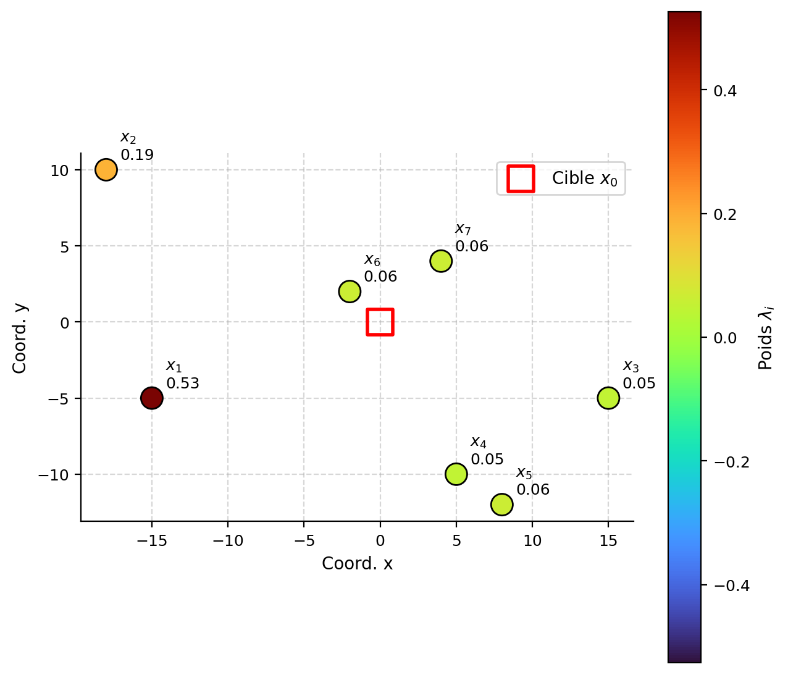
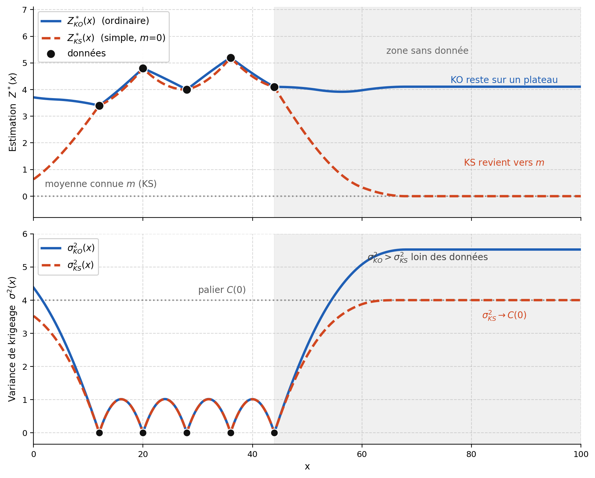
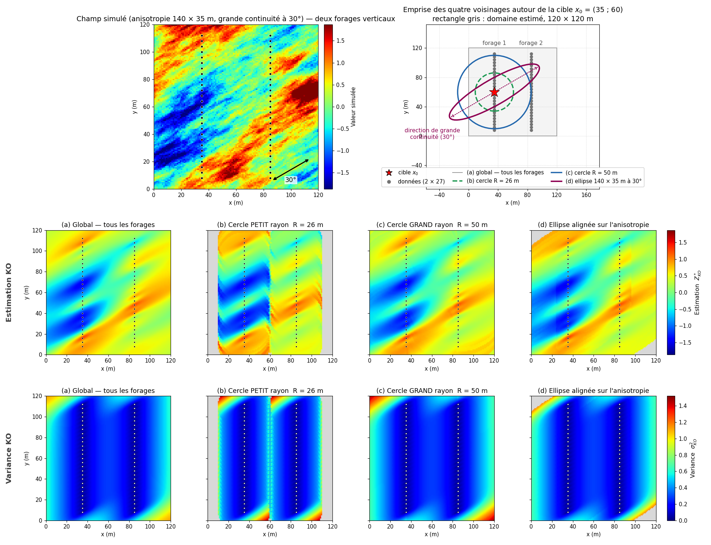
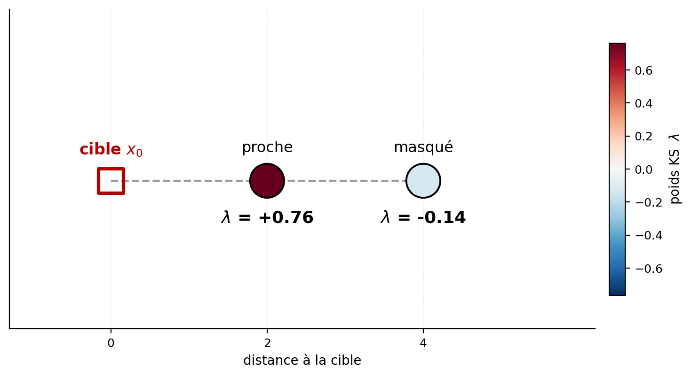
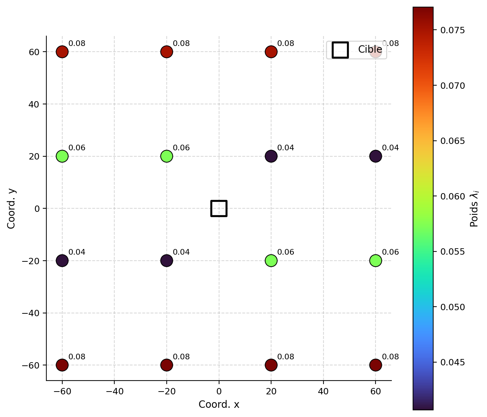
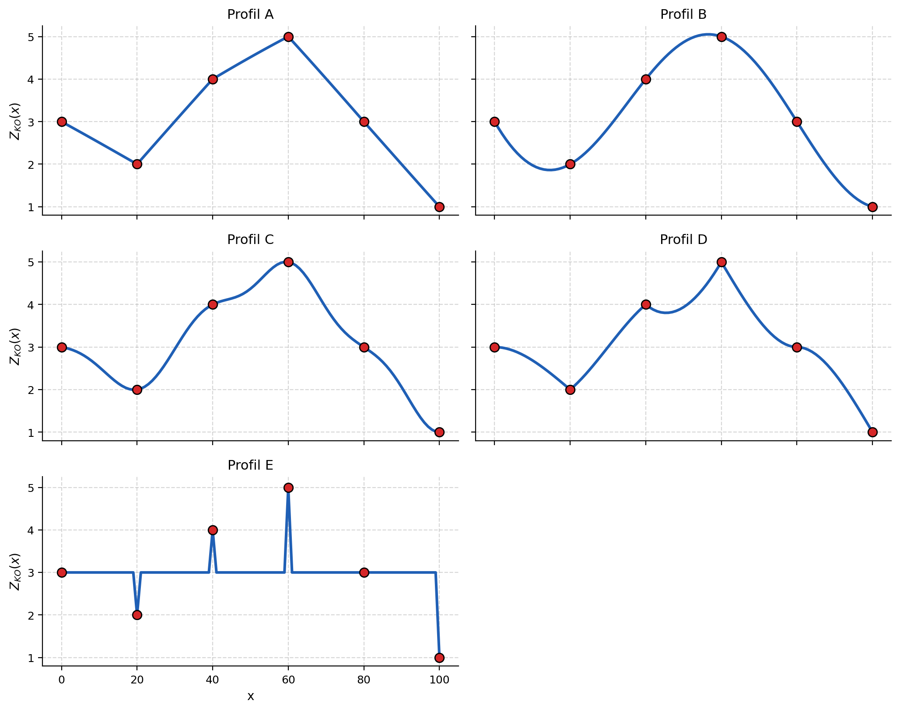

9 Krigeage
Ce chapitre est consacré au krigeage, une méthode permettant d’estimer une teneur inconnue à partir des données disponibles, en tenant compte non seulement de la distance entre les points, mais aussi de leur corrélation et leur redondance. Le krigeage simple et le krigeage ordinaire sont d’abord présentés, puis le krigeage de bloc. Le choix du voisinage est également abordé, puisqu’il peut avoir un effet important sur les estimations. Enfin, le krigeage universel et le krigeage avec dérive externe sont présentés pour traiter les situations où la moyenne varie dans l’espace. Des ateliers interactifs sont proposés pour illustrer les différentes méthodes de krigeage et leurs propriétés.
À la fin de ce chapitre, vous serez en mesure de :
Expliquer les différences entre krigeage simple, krigeage ordinaire et krigeage universel ;
Dériver les équations du krigeage à partir du principe de minimisation de la variance d’estimation ;
Construire et résoudre les systèmes de krigeage simple et ordinaire, calculer l’estimation et la variance de krigeage ;
Formuler le krigeage de bloc et comprendre l’effet de régression ;
Expliquer les principales propriétés du krigeage (interpolation exacte, effet d’écran, lissage, biais conditionnel) ;
Utiliser et interpréter la validation croisée par krigeage pour évaluer la qualité du modèle de variogramme.
Ce chapitre s’appuie principalement sur le livre suivant :
Chilès, J., & Delfiner, P. (2012). Geostatistics: Modeling Spatial Uncertainty. John Wiley & Sons.
9.1 Introduction
Une estimation peut être construite comme une combinaison pondérée des données voisines. La difficulté consiste alors à choisir les poids. Une donnée proche de la cible est généralement informative, mais sa contribution dépend aussi de la continuité spatiale et de sa redondance avec les autres observations. Deux données très proches ne fournissent pas nécessairement deux informations indépendantes (Figure 9.1).

Le krigeage utilise le variogramme ou la covariance pour déterminer les poids. Ceux-ci sont calculés de manière à satisfaire une condition d’absence de biais et à minimiser la variance de l’erreur d’estimation. Le krigeage est ainsi souvent présenté comme le meilleur estimateur linéaire sans biais, sous les hypothèses du modèle retenu.
Il fournit deux résultats :
- une estimation de la valeur ponctuelle ou de la teneur moyenne d’un bloc;
- une variance de krigeage, qui décrit la précision théorique associée à la configuration des données et au modèle spatial.
Principales formes de krigeage
Les variantes du krigeage se distinguent principalement par le modèle attribué à la moyenne.
Krigeage simple (KS) : la moyenne est connue et constante.
Krigeage ordinaire (KO) : la moyenne est inconnue, mais supposée constante dans le voisinage de l’estimation.
Krigeage universel (KU) : la moyenne varie dans l’espace selon une fonction des coordonnées.
Krigeage avec dérive externe (KED) : la moyenne varie en fonction d’une ou de plusieurs variables auxiliaires.
Dans le krigeage universel et le krigeage avec dérive externe, la moyenne varie selon la localisation des données. Le variogramme décrit alors la continuité spatiale des résidus, qui ont, de facto, une moyenne nulle, autour de la tendance.
Cadre du chapitre
Ce chapitre présente d’abord le krigeage simple et le krigeage ordinaire, qui permettent d’établir les principes fondamentaux de la méthode. Le krigeage de bloc, le choix du voisinage, le krigeage universel et le krigeage avec dérive externe sont ensuite abordés.
| Forme de krigeage | Modèle de moyenne | Structure spatiale requise |
|---|---|---|
| Krigeage simple (KS) | Connue et constante | Covariance ou variogramme avec variance finie |
| Krigeage ordinaire (KO) | Inconnue et constante localement | Variogramme ou covariance |
| Krigeage universel (KU) | Fonction des coordonnées | Variogramme ou covariance des résidus |
| Krigeage avec dérive externe (KED) | Fonction de variables auxiliaires | Variogramme ou covariance des résidus |
Étapes du krigeage
L’analyse de la continuité spatiale et l’ajustement d’un modèle de variogramme ont été traités précédemment; le krigeage s’appuie sur ce modèle pour déterminer les poids et réaliser l’estimation. La démarche complète comprend généralement les étapes suivantes :
- calculer le variogramme expérimental;
- ajuster un modèle de variogramme admissible;
- définir le point ou le bloc à estimer;
- choisir le type de krigeage et le voisinage;
- construire et résoudre le système de krigeage pour obtenir les poids;
- calculer l’estimation et la variance de krigeage;
- valider le modèle et les paramètres, par exemple par validation croisée.
Les deux premières étapes étant acquises, ce chapitre porte sur la construction du système de krigeage, le calcul des poids, l’estimation et l’interprétation de la variance de krigeage.
9.2 Krigeage simple
Le krigeage simple s’applique à une fonction aléatoire \(Z(\mathbf{x})\) stationnaire d’ordre deux, dont la moyenne et la fonction de covariance \(C(\mathbf{h})\) sont supposées connues. On décompose la variable en une moyenne constante et un résidu :
\[ Z(\mathbf{x}) = m + Y(\mathbf{x}) \]
où \(m = \mathbb{E}[Z(\mathbf{x})]\) est une constante et \(Y(\mathbf{x})\) un résidu stationnaire de moyenne nulle. Comme le retrait d’une constante ne modifie pas la covariance, \(C(\mathbf{h})\) est aussi la covaraince du résidu \(Y\) (\(C_Z(\mathbf{h})\) = \(C_Y(\mathbf{h})\)), et la variance a priori de la variable vaut \(\sigma^2 = C(\mathbf{0})\).
Dire que la moyenne \(m\) est « connue » ne signifie pas nécessairement que sa valeur réelle est connue avec certitude. Il s’agit plutôt d’une hypothèse de modélisation : \(m\) est fixée à partir d’informations extérieures, par exemple d’une longue série de campagnes d’échantillonnage ou d’un très grand nombre de données. L’estimation porte alors uniquement sur les écarts par rapport à cette moyenne.
Cette hypothèse est forte et rarement vérifiée en pratique. Le krigeage ordinaire, qui ne suppose pas la connaissance de la moyenne, lui est donc souvent préféré pour l’estimation. Le krigeage simple demeure néanmoins particulièrement utile en simulation géostatistique, notamment lorsque la variable simulée suit une loi de distribution préalablement définie, dont la moyenne est fixée. C’est notamment le cas des simulations gaussiennes, pour lesquelles la variable transformée est généralement centrée et possède donc une moyenne connue, souvent égale à zéro.
Une fois \(m\) fixée, les résidus \(Y_i = Z_i - m\) sont connus aux points de données, et seul le résidu \(Y_0 = Z_0 - m\) à la cible reste à estimer. On estime alors la valeur inconnue \(Z_0 = Z(\mathbf{x}_0)\) en ajoutant à la moyenne le résidu krigé :
\[ Z_0^* = m + \sum_{i=1}^{n} \lambda_i \, Y_i = m + \sum_{i=1}^{n} \lambda_i \, (Z_i - m) \]
où \(Z_i = Z(\mathbf{x}_i)\) est la valeur observée au point \(\mathbf{x}_i\) et \(\lambda_i\) son poids. Cette forme est sans biais quels que soient les poids, comme on le vérifie ci-dessous; les poids sont donc entièrement déterminés par la minimisation de la variance de l’erreur d’estimation, \(\operatorname{Var}(e)=\operatorname{Var}(Z_0 - Z_0^*)\), définie au chapitre précédent.
Condition de non-biais
En prenant l’espérance, et comme \(\mathbb{E}[Z_i] = m\) :
\[ \mathbb{E}[Z_0^*] = \mathbb{E}\!\left[m + \sum_{i=1}^{n} \lambda_i (Z_i - m)\right] = m + \sum_{i=1}^{n} \lambda_i \big(\mathbb{E}[Z_i] - m\big) = m + \sum_{i=1}^{n} \lambda_i (m - m) = m = \mathbb{E}[Z_0] \]
L’estimateur est donc sans biais quels que soient les poids \(\lambda_i\). Aucune contrainte sur la somme des poids n’est nécessaire à cause que la moyenne est connue. Comme aucune contrainte n’est nécessaire sur les poids pour s,tisfaire la contrainte de non-bais, il est apossible dd’avoir des poisd de krigeage qui seront négatifs et voir supérieur à 1. Cela peut poser problème dans l,estimation des
Dérivation du système de krigeage simple
On cherche les poids \(\lambda_i\) qui minimisent la variance de l’erreur d’estimation :
\[ \operatorname{Var}(e) = \operatorname{Var}(Z_0 - Z_0^*) \]
En remplaçant l’estimateur \(Z_0^* = m + \sum_{i=1}^{n} \lambda_i (Z_i - m)\), l’erreur devient
\[ Z_0 - Z_0^* = Z_0 - m - \sum_{i=1}^{n} \lambda_i (Z_i - m) = (Z_0 - m) - \sum_{i=1}^{n} \lambda_i (Z_i - m). \]
Chaque terme se regroupe avec la moyenne pour former un résidu centré, \(Y_0 = Z_0 - m\) et \(Y_i = Z_i - m\) :
\[ Z_0 - Z_0^* = Y_0 - \sum_{i=1}^{n} \lambda_i Y_i. \]
La moyenne \(m\) disparaît de l’erreur : elle n’y intervient que par l’intermédiaire des résidus. Comme la variance est insensible à l’ajout d’une constante et que les résidus ont la même covariance que \(Z\), la variance d’estimation et les poids ne dépendent pas de \(m\). C’est précisément ce qui permet de travailler avec la variable centrée.
Pour développer cette variance, on applique la règle de la variance d’une différence, \(\operatorname{Var}(A - B) = \operatorname{Var}(A) + \operatorname{Var}(B) - 2\operatorname{Cov}(A, B)\), avec \(A = Y_0\) et \(B = \sum_{i=1}^{n} \lambda_i Y_i\) :
\[ \operatorname{Var}(e) = \operatorname{Var}(Y_0) + \operatorname{Var}\!\left(\sum_{i=1}^{n} \lambda_i Y_i\right) - 2\,\operatorname{Cov}\!\left(Y_0,\ \sum_{i=1}^{n} \lambda_i Y_i\right). \]
On traite les trois termes séparément. Le premier est la variance du résidu à la cible :
\[ \operatorname{Var}(Y_0) = C(\mathbf{0}). \]
Le deuxième est la variance d’une combinaison linéaire. La covariance étant bilinéaire, on sort les poids et le produit des deux sommes devient une somme double :
\[ \operatorname{Var}\!\left(\sum_{i=1}^{n} \lambda_i Y_i\right) = \sum_{i=1}^{n} \sum_{j=1}^{n} \lambda_i \lambda_j \, \operatorname{Cov}(Y_i, Y_j) = \sum_{i=1}^{n} \sum_{j=1}^{n} \lambda_i \lambda_j \, C(\mathbf{x}_i - \mathbf{x}_j). \]
Le troisième reli les observations au point à estimer :
\[ \operatorname{Cov}\!\left(Y_0,\ \sum_{i=1}^{n} \lambda_i Y_i\right) = \sum_{i=1}^{n} \lambda_i \, \operatorname{Cov}(Y_0, Y_i) = \sum_{i=1}^{n} \lambda_i \, C(\mathbf{x}_i - \mathbf{x}_0). \]
Par simplicité de notation, on a que \(\operatorname{Cov}(Y_i, Y_j) = \operatorname{Cov}(Z_i, Z_j) = C(\mathbf{x}_i - \mathbf{x}_j) = C_{ij}\), \(\operatorname{Cov}(Y_0, Y_i) = \operatorname{Cov}(Z_0, Z_i) = C(\mathbf{x}_i - \mathbf{x}_0) = C_{i0}\) et \(\operatorname{Var}(Y_0) = \operatorname{Var}(Z_0) = C(\mathbf{0})\). En reportant les trois termes :
\[ \operatorname{Var}(e) = C(\mathbf{0}) + \sum_{i=1}^{n} \sum_{j=1}^{n} \lambda_i \lambda_j \, C_{ij} - 2 \sum_{i=1}^{n} \lambda_i \, C_{i0}. \]
Cette variance est une fonction quadratique des poids; on la minimise en annulant ses dérivées partielles par rapport à chaque \(\lambda_k\). Dans la somme double, l’indice \(k\) apparaît deux fois — une fois comme \(i\), une fois comme \(j\) — et la symétrie \(C_{kj} = C_{jk}\) réunit ces deux contributions, d’où le facteur 2 :
\[ \frac{\partial \sigma_K^2}{\partial \lambda_k} = 2 \sum_{j=1}^{n} \lambda_j \, C_{kj} - 2 \, C_{k0} = 0. \]
En divisant par 2, on obtient une équation par point \(k\), soit le système de krigeage simple :
\[ \sum_{j=1}^{n} \lambda_j \, C_{kj} = C_{k0}, \quad k = 1, \dots, n. \]
Le système comporte \(n\) équations, une pour chaque donnée observée, et \(n\) inconnues : les poids de krigeage. Comme le modèle de covariance est admissible et que les points de données sont distincts, la matrice du système est définie positive, donc inversible : le système admet une solution unique. Cette même propriété garantit que la variance \(\sigma_K^2\), fonction quadratique des poids, est strictement convexe; la solution du système en est donc bien le minimum.
Variance de krigeage simple
En reportant la solution dans l’expression de \(\operatorname{Var}(e)\), on obtient une forme simplifié de la varaince d’estimation nommé la variance de krigeage simple (\(\sigma_{SK}^2\)), c’est-à-dire la valeur minimale de la variance d’estimation :
\[ \sigma_{SK}^2 = \operatorname{Var}(e) = C(\mathbf{0}) - \sum_{i=1}^n \lambda_i \, C_{i0} \]
Elle part de la variance a priori \(\sigma^2 = C(\mathbf{0})\) et lui retranche l’information apportée par les données pondérées. Plus les données sont proches de la cible et bien réparties autour d’elle, plus la réduction de la variance est forte.
Comportement loin des données
Lorsque la cible est éloignée de toutes les données au-delà de la portée, les covariances \(C_{i0}\) sont nulles (modèle à portée finie, comme le sphérique) ou négligeables (modèle à portée effective, comme l’exponentiel ou le gaussien). Le système donne alors des poids nuls, \(\lambda_i \to 0 \forall i=1,...,n\), et :
- \(Z_0^* \to m\) : l’estimation revient à la moyenne;
- \(\sigma_{SK}^2 \to \sigma^2\) : la variance de krigeage tend vers la variance a priori.
En l’absence d’information spatiale utile, le krigeage simple retourne donc la moyenne, avec une incertitude maximale.
Forme matricielle
Le système de krigeage est un ensemble de \(n\) équations linéaires en les poids; on peut donc l’écrire sous forme matricielle, \(\mathbf{C}\, \boldsymbol{\lambda} = \mathbf{c}\) :
\[ \underbrace{\begin{bmatrix} C_{11} & C_{12} & C_{13} & \cdots & C_{1n} \\ C_{21} & C_{22} & C_{23} & \cdots & C_{2n} \\ C_{31} & C_{32} & C_{33} & \cdots & C_{3n} \\ \vdots & \vdots & \vdots & \ddots & \vdots \\ C_{n1} & C_{n2} & C_{n3} & \cdots & C_{nn} \end{bmatrix}}_{\mathbf{C}} \underbrace{\begin{bmatrix} \lambda_1 \\ \lambda_2 \\ \lambda_3 \\ \vdots \\ \lambda_n \end{bmatrix}}_{\boldsymbol{\lambda}} = \underbrace{\begin{bmatrix} C_{10} \\ C_{20} \\ C_{30} \\ \vdots \\ C_{n0} \end{bmatrix}}_{\mathbf{c}} \]
La matrice \(\mathbf{C}\) rassemble les covariances entre les données, et le vecteur \(\mathbf{c}\), les covariances entre les données et le point à estimer. \(\mathbf{C}\) est symétrique et définie positive dès que le modèle de covariance est valide et que les points d’échantillonnage sont distincts, la matrice \(\mathbf{C}\) est donc inversible :
\[ \boldsymbol{\lambda} = \mathbf{C}^{-1} \mathbf{c}. \]
La variance de krigeage s’écrit alors, sous forme matricielle,
\[ \sigma_{SK}^2 = C(\mathbf{0}) - \boldsymbol{\lambda}^\top \mathbf{c}. \]
🧮 Atelier interactif 9.1 — Krigeage simple (KS)
La moyenne \(m\) est supposée connue. Faites varier \(m\), la portée et l’effet de pépite, puis déplacez la cible. À mesure qu’elle s’éloigne des données, l’estimation retombe sur la moyenne (\(Z_0^* \to m\)) et la variance remonte jusqu’au palier (\(\sigma_{SK}^2 \to C(\mathbf{0})\)). Les poids \(\lambda_i\), eux, ne sont soumis à aucune contrainte.
9.3 Krigeage ordinaire
Le krigeage ordinaire s’applique lorsque la moyenne \(m\) est inconnue, mais qu’on peut la supposer constante dans le voisinage du point à estimer. C’est l’hypothèse la plus réaliste dans la plupart des situations, ce qui fait du krigeage ordinaire la variante de loin la plus utilisée en pratique.
Ne pas connaître \(m\) modifie la construction de l’estimateur. Dans le krigeage simple, on retranchait une moyenne connue pour travailler sur les résidus; ici, cette moyenne n’est plus disponible. On la remplace par une contrainte sur les poids, qui impose à l’estimateur de rester sans biais quelle que soit la valeur inconnue de la moyenne.
Construction de l’estimateur
L’estimateur est une combinaison linéaire des données :
\[ Z_0^* = \sum_{i=1}^n \lambda_i \, Z_i \]
où \(Z_i = Z(\mathbf{x}_i)\) est la valeur observée au point \(\mathbf{x}_i\) et \(\lambda_i\) son poids.
Condition de non-biais
Pour que l’estimateur soit sans biais, son espérance doit être égale à celle de la variable à estimer. Sous stationnarité, toutes les données ont la même moyenne \(m\) :
\[ \mathbb{E}[Z_0^*] = \sum_{i=1}^n \lambda_i \, \mathbb{E}[Z_i] = m \sum_{i=1}^n \lambda_i \]
Cette espérance doit valoir \(\mathbb{E}[Z_0] = m\). En posant \(\sum_{i=1}^n \lambda_i = 1\), on obtient bien que \(\mathbb{E}[Z_0^*] = m\).
Remarque. Sous la contrainte \(\sum_i \lambda_i = 1\), on peut réécrire l’estimateur sous une forme semblable au krigeage simple : \[Z_0^* = m + \sum_{i=1}^n \lambda_i (Z_i - m)\] le terme en \(m\) s’annule grâce à la contrainte. Le krigeage ordinaire agit donc comme si les données étaient corrigées autour d’une moyenne locale, sans qu’il faille fixer cette moyenne à l’avance.
Dérivation du système par la méthode de Lagrange
On cherche les poids \(\lambda_i\) qui minimisent la variance de l’erreur d’estimation,
\[ \operatorname{Var}(e) = \operatorname{Var}\!\left( Z_0 - \sum_{i=1}^n \lambda_i \, Z_i \right), \]
cette fois sous la contrainte \(\sum_{i=1}^n \lambda_i = 1\). En développant la variance comme en krigeage simple, on retrouve la même forme quadratique des poids :
\[ \operatorname{Var}(e) = C(\mathbf{0}) + \sum_{i=1}^n \sum_{j=1}^n \lambda_i \lambda_j \, C_{ij} - 2 \sum_{i=1}^n \lambda_i \, C_{i0} \]
Cependant, cette forme ne tient pas compte de la contrainte de non-baise sur les poids. Il faut donc ajouter un terme dans l’équation pour s’assurer que les poids soient de somme unitaire. Ainsi, on introduit un multiplicateur de Lagrange \(\nu\) et la fonctionnelle
\[ \mathcal{L}(\lambda_1, \dots, \lambda_n, \nu) = \operatorname{Var}(e) + 2\nu \left( \sum_{i=1}^n \lambda_i - 1 \right), \]
le facteur 2 devant \(\nu\) étant une convention qui allège les expressions finales. On annule les dérivées partielles par rapport à chaque poids \(\lambda_k\). Rappel que le facteur 2 du terme croisé vient, comme dans le cas du krigeage simple, de la symétrie \(C_{kj} = C_{jk}\) :
\[ \frac{\partial \mathcal{L}}{\partial \lambda_k} = 2 \sum_{j=1}^n \lambda_j \, C_{kj} + 2\nu - 2 \, C_{k0} = 0. \]
La dérivée par rapport à \(\nu\) redonne la contrainte et on obtient le système de krigeage ordinaire :
\[ \begin{cases} \displaystyle\sum_{j=1}^n \lambda_j \, C_{kj} + \nu = C_{k0}, & k = 1, \dots, n \\[6pt] \displaystyle\sum_{j=1}^n \lambda_j = 1 \end{cases} \]
Il comporte \(n + 1\) équations à \(n + 1\) inconnues : les \(n\) poids \(\lambda_1, \dots, \lambda_n\) et le multiplicateur \(\nu\).
Le système comporte \(n + 1\) équations, une par donnée observée, plus celle du multiplicateur de Lagrange, et autant d’inconnues : les \(n\) poids \(\lambda_1, \dots, \lambda_n\) et le multiplicateur \(\nu\). Dès que le modèle de covariance est admissible et que les points de données sont distincts, la matrice bordée du système est inversible : le système admet une solution unique. Contrairement au krigeage simple, cette matrice n’est pas définie positive, à cause de la ligne et de la colonne de contrainte; c’est toutefois la restriction de la variance \(\sigma_K^2\) au sous-espace des poids vérifiant \(\sum_i \lambda_i = 1\) qui reste strictement convexe, ce qui garantit que la solution du système en est bien le minimum.
Variance de krigeage ordinaire
En reportant la solution dans l’expression de la variance, on obtient la variance de krigeage ordinaire :
\[ \sigma_{OK}^2 = C(\mathbf{0}) - \sum_{i=1}^n \lambda_i \, C_{i0}) - \nu \]
Elle contient, par rapport au krigeage simple, un terme supplémentaire \(-\nu\). Comme le krigeage ordinaire subit une contrainte de plus, sa variance est, à configuration égale, supérieure ou égale à celle du krigeage simple (\(\sigma_{SK}^2 \leq \sigma_{OK}^2\)). C’est simple à expliquer : il est plus facile d’estimer une donnée lorsque l’on connaît sa moyenne que lorsque celle-ci est inconnue.
Point clé. La variance de krigeage ne dépend pas des valeurs observées. Elle est entièrement fixée par le modèle de variogramme (ou de covariance) et par la configuration géométrique des données par rapport au point (ou au bloc) à estimer. On peut donc la calculer avant même de collecter les données, ce qui est utile pour planifier les campagnes d’échantillonnage.
Formulation en termes de variogramme
On préfère souvent exprimer le système à l’aide du variogramme plutôt que de la covariance. C’est pratique sous l’hypothèse intrinsèque. En utilisant \(C(\mathbf{h}) = \sigma^2 - \gamma(\mathbf{h})\) et la contrainte \(\sum_i \lambda_i = 1\) (qui fait disparaître les termes en \(\sigma^2\)), le système devient
\[ \begin{cases} \displaystyle\sum_{j=1}^n \lambda_j \, \gamma_{kj} - \nu = \gamma{k0}, & k = 1, \dots, n \\[6pt] \displaystyle\sum_{i=1}^n \lambda_i = 1 \end{cases} \]
et la variance de krigeage :
\[ \sigma_{OK}^2 = \sum_{i=1}^n \lambda_i \, \gamma{i0} - \nu. \]
Cette écriture ne fait intervenir que le variogramme, sans exiger la variance a priori \(\sigma^2\). C’est pourquoi le krigeage ordinaire ne requiert que le variogramme et fonctionne tant sous l’hypothèse de stationnarité d’ordre 2 que sous l’hypothèse intrinsèque, alors que le krigeage simple requiert la fonction de covariance, donc la stationnarité d’ordre 2.
Forme matricielle
Il est facile de passer de la forme matricielle du krigeage simple à celle du krigeage ordinaire : il suffit d’ajouter une ligne et une colonne de 1 à la matrice \(\mathbf{C}\) pour tenir compte de la contrainte de non-biais (portée par le multiplicateur de Lagrange), avec un 0 dans le coin. On complète de même le vecteur \(\mathbf{c}\) par un 1. Le système \(\mathbf{A}\, \boldsymbol{\lambda}^+ = \mathbf{b}\) s’écrit alors :
\[ \underbrace{\begin{bmatrix} C_{11} & C_{12} & \cdots & C_{1n} & 1 \\ C_{21} & C_{22} & \cdots & C_{2n} & 1 \\ \vdots & \vdots & \ddots & \vdots & \vdots \\ C_{n1} & C_{n2} & \cdots & C_{nn} & 1 \\ 1 & 1 & \cdots & 1 & 0 \end{bmatrix}}_{\mathbf{A}} \underbrace{\begin{bmatrix} \lambda_1 \\ \lambda_2 \\ \vdots \\ \lambda_n \\ \nu \end{bmatrix}}_{\boldsymbol{\lambda}^+} = \underbrace{\begin{bmatrix} C_{10} \\ C_{20} \\ \vdots \\ C_{n0} \\ 1 \end{bmatrix}}_{\mathbf{b}} \]
Krigeage simple ou ordinaire?

Les deux variantes ne diffèrent que par le statut de la moyenne, et tout le reste en découle (Figure 9.2) :
| Krigeage simple | Krigeage ordinaire | |
|---|---|---|
| Moyenne \(m\) | connue (déterministe) | inconnue, constante |
| Contrainte sur les poids | aucune | \(\sum_i \lambda_i = 1\) |
| Multiplicateur de Lagrange | — | \(\nu\) |
| Prérequis | covariance \(C(\mathbf{h})\) | variogramme \(\gamma(\mathbf{h})\) |
| Système | \(\mathbf{C}\boldsymbol{\lambda} = \mathbf{c}\) (\(n\) équations) | \(\mathbf{A}\boldsymbol{\lambda}^+ = \mathbf{b}\) (\(n+1\) équations) |
| Variance | \(\sigma_{SK}^2 = C(\mathbf{0}) - \sum_i \lambda_i\, C_{i0}\) | \(\sigma_{OK}^2 = C(\mathbf{0}) - \sum_i \lambda_i\, C_{i0} - \nu\) |
🧮 Atelier interactif 9.2 — Krigeage ordinaire (KO)
La moyenne \(m\) est inconnue. Ajustez la portée, l’effet de pépite et la position de la cible. Suivez la contrainte \(\sum_i \lambda_i = 1\) et le multiplicateur \(\nu\) qui s’ajuste pour la satisfaire, puis comparez avec le krigeage simple (option « Superposer KS ») : à configuration égale, \(\sigma_{OK}^2 \ge \sigma_{SK}^2\), car le krigeage ordinaire « paie » l’estimation implicite de la moyenne.
Exemple de construction d’un système de krigeage simple et ordinaire
Construire un système de krigeage n’est pas complexe en soi : il suffit d’en suivre les étapes. Voici un atelier interactif, modifiable, qui montre comment résoudre un système de krigeage simple ou ordinaire, étape par étape :
- calculer la matrice des distances entre les données, et entre chaque donnée et la cible;
- en déduire la matrice de variogramme \(\gamma(h)\);
- convertir en matrice de covariance, \(C(h) = \sigma^2 - \gamma(h)\);
- assembler le système de krigeage (matrice \(\mathbf{A}\) et second membre \(\mathbf{b}\));
- résoudre le système pour obtenir les poids \(\boldsymbol{\lambda}\) et le multiplicateur \(\nu\);
- calculer l’estimation \(Z_0^*\) et la variance de krigeage \(\sigma_K^2\).
🧮 Atelier interactif 9.3 — Système de krigeage (exemple numérique)
Choisissez le krigeage simple ou ordinaire, réglez le modèle de variogramme, et suivez le calcul à chaque étape. Idéal pour vérifier vos calculs manuels.
9.4 Krigeage de bloc
Le krigeage a d’abord été conçu pour estimer non pas des valeurs ponctuelles, mais des teneurs moyennes sur des blocs miniers. Son objectif initial était de corriger la surestimation systématique qui apparaît lorsqu’on sélectionne des blocs riches d’après leurs seuls échantillons internes. Ce biais de sélection s’explique par l’effet de régression, qu’on présente d’abord.
Effet de régression
Considérons un bloc dont la teneur est estimée à partir des échantillons qu’il contient. Si le bloc est retenu parce que ses échantillons internes sont riches, les données situées autour du bloc apportent une autre information : leurs valeurs sont souvent moins fortes que celles de l’intérieur, si bien que la teneur calculée sur les seuls échantillons internes est probablement trop élevée. Le phénomène s’inverse pour un bloc pauvre, dont l’entourage indique en général des valeurs moins faibles. Ce retour vers la moyenne se résume ainsi :
- un bloc très riche selon ses échantillons internes est souvent moins riche en réalité;
- un bloc très pauvre selon ses échantillons internes est souvent moins pauvre en réalité.
C’est l’effet de régression, ou régression vers la moyenne. Sous l’hypothèse d’une relation linéaire entre la vraie teneur et la teneur observée (exacte en cas de binormalité), on l’écrit :
\[ \mathbb{E}[Z_v \mid Z_v^{\text{obs}}] = m + \beta \left(Z_v^{\text{obs}} - m \right) \]
où \(Z_v\) est la vraie moyenne du bloc, \(Z_v^{\text{obs}}\) la moyenne observée sur les échantillons internes, \(m\) la moyenne globale et \(0 < \beta < 1\) un coefficient de régression. Comme \(\beta < 1\), l’estimation est ramenée vers la moyenne. Lorsque \(m\) est inconnue, on la remplace par la moyenne des données \(\bar{Z}\) :
\[ Z_v^* = \bar{Z} + \beta \left(Z_v^{\text{obs}} - \bar{Z} \right) \]
Cette correction est une combinaison linéaire des données. Le krigeage de bloc généralise cette idée : au lieu de ne compter que les échantillons internes, il pondère toutes les données du voisinage — internes comme externes — d’après le variogramme, ce qui corrige le biais automatiquement.
Estimation d’un bloc
On cherche à estimer la teneur moyenne de \(Z(\mathbf{x})\) sur un bloc \(v\) :
\[ Z_v = \frac{1}{|v|} \int_v Z(\mathbf{x}) \, d\mathbf{x} \]
où \(|v|\) est la mesure (aire ou volume) du bloc. L’estimateur garde la forme d’une combinaison linéaire des données, et les poids minimisent toujours la variance de l’erreur d’estimation sous la contrainte d’absence de biais :
\[ Z_v^* = \sum_{i=1}^n \lambda_i \, Z_i. \]
Tout le krigeage de bloc découle d’une seule observation : passer du point au bloc revient à remplacer le point à estimer \(\mathbf{x}_0\) par le bloc \(v\). Dans la variance de l’erreur, seuls les termes qui font intervenir ce point à estimer changent; ils sont alors moyennés sur le bloc. Concrètement, deux substitutions par rapport au krigeage ponctuel :
- la covariance entre une donnée et le point à estimer, \(C_{i0}\), devient la covariance entre une donnée et le bloc
\[ \bar{C}_{iv} = \frac{1}{|v|} \int_v C(\mathbf{x}_i - \mathbf{x}) \, d\mathbf{x}; \]
- la variance ponctuelle \(C(\mathbf{0})\) devient la variance du bloc
\[ \bar{C}_{vv} = \frac{1}{|v|^2} \int_v \int_v C(\mathbf{x} - \mathbf{y}) \, d\mathbf{x} \, d\mathbf{y}. \]
Les covariances entre les données, \(C_{ij}\), ne changent pas : elles ne dépendent pas du bloc à estimer. La matrice du système est donc exactement celle du krigeage ponctuel; seuls le second membre et le terme constant de la variance sont remplacés par leurs versions moyennées sur le bloc. En pratique, ces intégrales sont évaluées numériquement, en discrétisant le bloc en points régulièrement espacés et en moyennant les covariances correspondantes.
Krigeage simple et ordinaire de bloc
Il ne reste qu’à appliquer ces substitutions aux systèmes déjà établis pour le point.
Dans le cas du krigeage simple (moyenne connue), sans contrainte ni multiplicateur :
\[ \sum_{j=1}^n \lambda_j \, C_{ij} = \bar{C}_{iv}, \quad i = 1, \dots, n, \qquad \sigma_{SK,v}^2 = \bar{C}_{vv} - \sum_{i=1}^n \lambda_i \, \bar{C}_{iv}. \]
Dans le cas du krigeage ordinaire (moyenne inconnue), avec la contrainte \(\sum_i \lambda_i = 1\) et le multiplicateur \(\nu\) :
\[ \begin{cases} \displaystyle\sum_{j=1}^n \lambda_j \, C_{ij} + \nu = \bar{C}_{iv}, & i = 1, \dots, n \\[6pt] \displaystyle\sum_{j=1}^n \lambda_j = 1 \end{cases} \qquad \sigma_{OK,v}^2 = \bar{C}_{vv} - \sum_{i=1}^n \lambda_i \, \bar{C}_{iv} - \nu. \]
Dans les deux cas, \(\bar{C}_{vv}\) remplace le palier \(C(\mathbf{0})\). Comme la variance d’une moyenne spatiale est inférieure à la variance ponctuelle, \(\bar{C}_{vv} \le C(\mathbf{0})\), et que la variance de krigeage de bloc est en général plus faible que celle du krigeage ponctuel, on en déduit qu’il est plus facile d’estimer une moyenne sur un bloc qu’une valeur ponctuelle.
Formulation avec le variogramme
En utilisant \(C(\mathbf{h}) = \sigma^2 - \gamma(\mathbf{h})\) et la contrainte \(\sum_i \lambda_i = 1\), le krigeage ordinaire de bloc s’écrit aussi avec le variogramme :
\[ \begin{cases} \displaystyle\sum_{j=1}^n \lambda_j \, \gamma(\mathbf{x}_i - \mathbf{x}_j) - \nu = \bar{\gamma}_{iv}, & i = 1, \dots, n \\[6pt] \displaystyle\sum_{j=1}^n \lambda_j = 1 \end{cases} \qquad \sigma_{OK,v}^2 = \sum_{i=1}^n \lambda_i \, \bar{\gamma}_{iv} - \nu - \bar{\gamma}_{vv}, \]
avec les variogrammes moyennés sur le bloc, définis comme les covariances :
\[ \bar{\gamma}_{iv} = \frac{1}{|v|} \int_v \gamma(\mathbf{x}_i - \mathbf{x}) \, d\mathbf{x}, \qquad \bar{\gamma}_{vv} = \frac{1}{|v|^2} \int_v \int_v \gamma(\mathbf{x} - \mathbf{y}) \, d\mathbf{x} \, d\mathbf{y}. \]
Assemblage des estimations
Si un domaine \(V\) se compose de plusieurs blocs \(v_k\), sa teneur moyenne est la moyenne des teneurs de bloc, pondérée par leur taille :
\[ Z_V = \frac{1}{|V|} \sum_k |v_k| \, Z_{v_k}. \]
Par linéarité du krigeage, l’estimation du domaine s’obtient de la même façon, à partir des estimations de bloc :
\[ Z_V^* = \frac{1}{|V|} \sum_k |v_k| \, Z_{v_k}^*. \]
Point clé. Le krigeage de bloc corrige l’effet de régression parce qu’il intègre l’information de l’ensemble des données du voisinage, et non seulement des échantillons internes au bloc.
🧮 Atelier interactif 9.4 — Krigeage de bloc vs ponctuel
Comparez côte à côte les cartes d’estimation ponctuelle et de bloc. Ajustez la taille du bloc et observez l’effet de lissage (\(\operatorname{Var}(Z^*_v) < \operatorname{Var}(Z^*_{\text{pt}})\)) ainsi que la baisse de la variance de krigeage. Le krigeage d’un bloc est égal à la moyenne des krigeages ponctuels qui le composent.
9.5 Sélection du voisinage
La théorie du krigeage est formulée à partir de l’ensemble des \(N\) données disponibles, ce qui correspond à un voisinage global. En pratique, on utilise presque toujours un voisinage local : un sous-ensemble de données choisi autour du point (ou du bloc) à estimer. Ce choix tient à des raisons numériques autant que géostatistiques.
La raison numérique est directe. Résoudre le système de krigeage suppose d’inverser sa matrice, une opération dont le coût croît comme \(O(N^3)\). Avec plusieurs milliers de données, cette inversion devient trop lourde pour un ordinateur classique. En restreignant le calcul aux données proches du point à estimer, le voisinage local ramène la matrice à une taille \(n \times n\), avec \(n \ll N\), et rend le krigeage praticable.
Voisinage global et voisinage local
Dans le voisinage global, toutes les données contribuent à chaque estimation. La cohérence de l’estimateur est optimale, mais trois difficultés apparaissent :
- Le système de krigeage a une taille \(N \times N\) (ou \((N+1) \times (N+1)\) en krigeage ordinaire), ce qui devient vite prohibitif en calcul et en mémoire quand \(N\) est grand.
- L’hypothèse de stationnarité est rarement vérifiée sur tout le domaine. Utiliser des données très éloignées du point à estimer peut introduire un biais si la moyenne ou la continuité spatiale varie à grande échelle.
- Les données éloignées reçoivent de toute façon des poids très faibles, voire nuls au-delà de la portée : leur contribution à l’estimation est négligeable.
En voisinage local, seules les \(n\) données les plus proches (ou situées à l’intérieur d’un rayon de recherche) servent à estimer chaque point. Le système de krigeage est résolu séparément pour chaque cible, avec un jeu de données et des poids différents à chaque fois.
Paramètres du voisinage
Les paramètres suivants définissent le voisinage utilisé pour chaque estimation.
Rayon de recherche. Le poids attribué à une donnée dépend de sa continuité spatiale avec le point à estimer. Pour un modèle à portée finie, les données situées au-delà de la portée ne sont plus corrélées avec la cible et apportent donc peu ou pas d’information. Le rayon de recherche délimite cette zone, généralement sous la forme d’un ellipsoïde centré sur le point à estimer. Ses dimensions sont souvent fixées à partir des portées du variogramme et peuvent être augmentées, par exemple jusqu’à deux fois la portée, dans les zones moins bien échantillonnées (Figure 9.3).

Nombre de données. Un nombre minimal de données est imposé afin d’éviter les estimations reposant sur une information trop limitée. Lorsque ce seuil, souvent fixé autour de huit données, n’est pas atteint, le point peut être laissé sans estimation. Un nombre maximal est également fixé, généralement autour de 30 données. Au-delà, les données supplémentaires apportent souvent peu d’information en raison de l’effet d’écran, tandis que la résolution du système de krigeage devient plus coûteuse.
Recherche par secteurs. Le nombre de données ne garantit pas qu’elles soient bien réparties autour de la cible. Dans un échantillonnage irrégulier, les données les plus proches peuvent toutes provenir d’une même direction, par exemple le long d’une ligne de forage. Pour limiter ce déséquilibre, le voisinage est divisé en secteurs, comme quatre quadrants ou huit octants, et un nombre maximal de données est retenu dans chacun d’eux. Cette approche favorise une meilleure couverture spatiale autour du point à estimer et réduit la redondance entre les données sélectionnées.
Conséquences du voisinage local
L’utilisation d’un voisinage local introduit deux approximations par rapport à une estimation fondée sur l’ensemble des données :
- Deux points voisins peuvent être estimés à partir de jeux de données différents et recevoir des poids différents. De légères discontinuités peuvent ainsi apparaître d’un point ou d’un bloc à l’autre, notamment lorsque la composition du voisinage change brusquement.
- La variance de krigeage obtenue avec un voisinage local diffère de celle qui serait calculée avec un voisinage global. L’écart demeure généralement faible lorsque le voisinage couvre adéquatement la zone de continuité spatiale autour de la cible.
Malgré ces approximations, le voisinage local reste essentiel en pratique. Il réduit fortement le coût des calculs et permet de limiter l’estimation à une zone où l’hypothèse de stationnarité est plus plausible. D’une certaine manière, on vient relâcher l’hypothèse de stationnarité d’ordre deux, en la rendant obligatoire uniquement dans le voisinage de l’estimation.
🧮 Atelier interactif 9.5 — Sélection du voisinage et effet d’écran
Faites varier le nombre \(k\) de plus proches voisins. Observez les discontionuités de l’estimation lorsque un voisin entre ou sort du voisinage, et la convergence vers la solution globale lorsque \(k\) grandit. L’effet d’écran rend les voisins lointains presque inutiles : un point proche fait barrière aux données plus éloignées dans la même direction.
Validation croisée
La validation croisée (cross-validation) évalue la qualité du modèle de variogramme et des paramètres de voisinage. Le principe : on retire temporairement chaque donnée de l’échantillonnage, puis on l’estime par krigeage à partir des données restantes. Dans tout ce qui suit, \(Z^*\) et \(\sigma_K\) désignent donc l’estimation et l’écart-type de krigeage obtenus sans la donnée que l’on cherche à retrouver. On obtient ainsi, pour chaque point \(\mathbf{x}_i\) :
- l’estimation par krigeage : \(Z^*(\mathbf{x}_i)\)
- la variance de krigeage : \(\sigma^2_K(\mathbf{x}_i)\)
- l’erreur de validation croisée : \(e_i = Z(\mathbf{x}_i) - Z^*(\mathbf{x}_i)\)
- l’erreur standardisée : \(e_i^s = e_i / \sigma_K(\mathbf{x}_i)\)
Un modèle bien calibré doit produire des erreurs sans biais systématique et compatibles avec l’incertitude annoncée par le krigeage. On examine notamment les critères suivants :
- Moyenne des erreurs proche de zéro : \(\bar{e}\approx 0\). Une valeur sensiblement différente de zéro indique une tendance à surestimer ou à sous-estimer les données.
- Moyenne des erreurs standardisées proche de zéro : \(\bar{e}^s\approx 0\). Ce critère vérifie l’absence de biais relativement à l’incertitude propre à chaque estimation.
- Variance des erreurs standardisées proche de un : \(\operatorname{Var}(e^s)\approx 1\). Une valeur inférieure à un suggère que la variance de krigeage est trop grande, tandis qu’une valeur supérieure à un indique qu’elle est probablement sous-estimée.
- Absence de structure dans les erreurs : les erreurs ne devraient pas varier systématiquement selon la position, la valeur estimée, la densité des données ou la distance aux voisins.
Lorsque le modèle repose sur une hypothèse gaussienne, la distribution des erreurs standardisées peut également être comparée à une loi normale centrée réduite à l’aide d’un histogramme ou d’un graphique quantile-quantile. Cette normalité n’est toutefois pas une exigence générale du krigeage.
La validation croisée demeure un outil de diagnostic. Elle vérifie le comportement du modèle aux emplacements déjà échantillonnés, mais ne garantit pas sa validité dans les zones dépourvues de données. Elle sert surtout à comparer différents variogrammes ou voisinages et à repérer les problèmes de biais, de calibration de la variance ou de sélection des données.
🧮 Atelier interactif 9.6 — Validation croisée
Reprise de l’exemple simulé des notes de cours (diapo 53). Quatre vues : le champ simulé avec ses données ; la surface de \(\operatorname{Var}(e)\) (variance des erreurs de validation croisée leave-one-out) en fonction de la portée \(a\) et du ratio \(c_0/C\), dont le minimum donne le meilleur modèle ; le variogramme expérimental confronté au modèle courant ; et le nuage de validation \(Z\) observé vs \(Z^*\) (estimé en retirant la donnée). Réglez le modèle, ou cliquez « Ajuster aux données » pour amener le modèle courant sur le minimum de la surface. Cherchez \(\overline{e^s} \approx 0\) et \(\operatorname{Var}(e^s) \approx 1\).
9.6 Propriétés du krigeage
Au-delà du calcul des poids, le krigeage possède plusieurs propriétés qui expliquent sa place centrale parmi les méthodes d’estimation spatiale.
Optimalité : linéarité, absence de biais et variance minimale
Le krigeage est un estimateur linéaire : la valeur recherchée est estimée à partir d’une combinaison linéaire des données ou, dans le cas du krigeage simple, de leurs écarts par rapport à la moyenne connue. Les poids ne sont toutefois pas déterminés uniquement en fonction de la distance. Ils tiennent également compte de la continuité spatiale et de la redondance entre les données.
Les poids sont calculés de manière à respecter deux propriétés : 1) l’absence de biais; 2) la minimisation de la variance de l’erreur d’estimation.
Le krigeage est ainsi qualifié de meilleur estimateur linéaire sans biais, ou Best Linear Unbiased Estimator (BLUE). Le terme « meilleur » doit cependant être interprété dans ce cadre précis : parmi les estimateurs linéaires sans biais construits avec le modèle de covariance ou de variogramme choisi, le krigeage fournit la plus petite variance d’estimation.
Cette optimalité ne garantit ni que le modèle de variogramme représente parfaitement la réalité ni que les estimations sont exactes partout. Elle signifie seulement que l’estimateur est optimal compte tenu des hypothèses retenues.
Interpolation exacte
Le krigeage est un interpolateur exact.
Lorsqu’une estimation ponctuelle est réalisée exactement à l’emplacement et sur le même support qu’une donnée connue, le krigeage reproduit cette donnée : \(Z^*(\mathbf{x}_i) = Z(\mathbf{x}_i), \quad \forall \, \mathbf{x}_i \in S\) et les variances de krigeage en ces points sont nulles : \(\sigma_K^2(\mathbf{x}_i) = 0, \quad \forall \, \mathbf{x}_i \in S\).
La présence d’un effet de pépite ne supprime pas nécessairement cette propriété. Lorsque la pépite représente une variabilité à très courte distance faisant partie de la variable étudiée, le krigeage demeure un interpolateur exact.
La situation est différente lorsque l’effet de pépite est interprétée comme une erreur de mesure ou comme un bruit que l’on souhaite filtrer. L’objectif consiste alors à estimer le signal sous-jacent plutôt que de reproduire fidèlement la valeur observée. Il existe ainsi une forme de krigeage, le krigeage avec erreur de mesure, qui permet de tenir compte de cette erreur ou de ce bruit dans les mesures et qui n’est donc plus un interpolateur exact, et dont la variance ne s’annule pas nécessairement aux points échantillonnés.
Remarque. L’interpolation exacte consiste en une estimation effectuée sur le même support que la donnée. Une donnée ponctuelle et la teneur moyenne d’un bloc représentent deux supports différents : l’estimation du bloc n’est donc pas tenue de reproduire exactement la valeur ponctuelle, même si le point se trouve à l’intérieur du bloc.
Effet d’écran
L’effet d’écran (screening effect) désigne la tendance des données proches de la cible à réduire l’influence des données plus éloignées qui apportent une information similaire.
Par exemple, lorsqu’une donnée éloignée se trouve derrière une donnée plus proche dans une même direction, son information est en partie redondante. Le krigeage tient compte de cette redondance et lui attribue généralement un poids plus faible que si elle était isolée (Figure 9.4).

L’intensité de l’effet d’écran dépend notamment :
- de la géométrie des données;
- du comportement du variogramme à courte distance;
- de l’importance de l’effet de pépite;
- du type de krigeage utilisé.
Un effet de pépite élevé réduit généralement l’effet d’écran, car les données proches deviennent moins fortement corrélées entre elles et avec la cible. Dans le cas limite d’un effet de pépite pur, les données ne présentent aucune continuité spatiale. En krigeage ordinaire, les données sélectionnées reçoivent alors des poids égaux. En krigeage simple, l’estimation revient plutôt vers la moyenne connue lorsque la cible ne coïncide avec aucune donnée.
L’effet d’écran justifie en partie l’utilisation d’un voisinage local : lorsque le voisinage couvre adéquatement la zone d’influence de la cible, l’exclusion des données très éloignées entraîne généralement une faible perte d’information tout en réduisant considérablement le coût des calculs.
Prise en compte de la géométrie
Contrairement aux méthodes fondées uniquement sur la distance, comme l’inverse de la distance, le krigeage tient compte de la configuration spatiale de l’ensemble des données.
Position relative des données. Deux données proches l’une de l’autre fournissent une information partiellement redondante. Le krigeage ajuste leurs poids en fonction de leur position par rapport à la cible, mais également en fonction de leur position l’une par rapport à l’autre. Un regroupement de données dans une même zone ne reçoit donc pas automatiquement toute l’influence simplement parce qu’il contient plusieurs observations.
Support à estimer. Les poids dépendent également du support de la quantité recherchée. L’estimation d’un point et celle de la moyenne d’un bloc ne font pas intervenir les mêmes covariances. Lorsque la taille du bloc augmente, les poids tendent généralement à être répartis plus uniformément, puisque la quantité estimée représente une moyenne sur un volume plus important. La variance d’estimation tend également à diminuer, car une moyenne de bloc est moins variable qu’une valeur ponctuelle.
Influence de la continuité spatiale
Le variogramme décrit la continuité spatiale utilisée par le krigeage. Ses principales caractéristiques influencent directement les poids et la variance d’estimation.
Effet de pépite. Un effet de pépite élevé indique une forte variabilité à courte distance ou une erreur de mesure importante. Il réduit l’influence des données proches, affaiblit l’effet d’écran et augmente généralement la variance d’estimation.
Portée. À palier comparable, une grande portée indique que la continuité se maintient sur de plus longues distances. Les données éloignées peuvent alors conserver une influence significative sur l’estimation. Pour les modèles sans portée finie, comme le modèle exponentiel, on utilise plutôt une portée pratique correspondant à une distance au-delà de laquelle la covariance devient négligeable.
Anisotropie. Lorsque la continuité varie selon la direction, les poids dépendent non seulement de la distance, mais également de l’orientation des données par rapport à la cible. Une donnée située dans une direction de forte continuité peut ainsi recevoir davantage de poids qu’une donnée située à la même distance dans une direction de faible continuité (Figure 9.5).

Remarque. Le comportement du variogramme aux distances comparables à l’espacement des données influence souvent davantage les estimations que son comportement à grande distance. Deux modèles différents peuvent ainsi produire des résultats semblables s’ils représentent de manière comparable la continuité aux courtes distances pertinentes pour le voisinage utilisé (Figure 9.6).

Effet de lissage
Le krigeage produit généralement des estimations moins dispersées que les valeurs réelles. Ce phénomène, appelé effet de lissage, provient du fait que chaque estimation combine l’information de plusieurs données. Les fluctuations locales et les valeurs extrêmes sont alors atténuées.
Cette propriété doit toutefois être interprétée avec prudence. La réduction de variance est garantie en krigeage simple, mais elle n’est pas automatiquement garantie pour toutes les configurations de krigeage ordinaire, notamment lorsque le voisinage est très restreint ou mal adapté.
Krigeage simple
Pour le krigeage simple, la relation suivante lie la variance des valeurs réelles, la variance des estimations et la variance de krigeage :
\[ \operatorname{Var}(Z_v) = \operatorname{Var}(Z_v^*) + \sigma_{SK}^2 \]
Cette décomposition montre que la variance des estimations est toujours inférieure à la variance des valeurs réelles, la différence étant exactement égale à la variance de krigeage.
Krigeage ordinaire
Pour le krigeage ordinaire, la relation est légèrement modifiée par le multiplicateur de Lagrange :
\[ \operatorname{Var}(Z_v) = \operatorname{Var}(Z_v^*) + \sigma_{OK}^2 + 2\nu \]
Exemple numérique. Considérons un bloc de \(10 \times 10\), estimé par ses 4 coins, avec un variogramme sphérique de palier 1 et de portée 20 :
- \(\operatorname{Var}(Z_v) = 0{,}6278\)
- \(\sigma_{OK}^2 = 0{,}1311\)
- \(\operatorname{Var}(Z_v^*) = 0{,}4353\)
- \(\nu = 0{,}0307\)
Vérification : \(0{,}4353 + 0{,}1311 + 2 \times 0{,}0307 = 0{,}6278\)
L’effet de lissage a des conséquences importantes en pratique : l’histogramme des valeurs krigées est plus resserré autour de la moyenne que l’histogramme des valeurs réelles. Les valeurs extrêmes (très élevées ou très faibles) sont systématiquement atténuées.
Sur une carte ou dans un modèle de blocs, l’effet de lissage se traduit visuellement par des valeurs krigées moins variables et plus lisses que celles du modèle de variogramme utilisé. Les teneurs très élevées sont atténuées, tandis que les teneurs très faibles sont ramenées vers la moyenne. Une carte krigée ne cherche donc pas à reproduire l’intégralité de la variabilité spatiale de la réalité; cet objectif relève plutôt des simulations géostatistiques.
Biais conditionnel
L’absence de biais global signifie que l’erreur moyenne est nulle, \(\mathbb{E}[Z_v-Z_v^*]=0\). Cette propriété ne suffit toutefois pas à décrire le comportement de l’estimateur pour différents niveaux de teneur. Le biais conditionnel examine plutôt l’espérance de la valeur réelle lorsque la valeur estimée est connue, \(\mathbb{E}[Z_v\mid Z_v^*]\).
En contexte minier, cette distinction est importante puisque les décisions reposent souvent sur une teneur de coupure. Il faut alors vérifier si les blocs estimés comme riches ou pauvres présentent effectivement, en moyenne, les teneurs annoncées.
Krigeage simple
Sous l’hypothèse de multinormalité, le krigeage simple correspond à l’espérance conditionnelle linéaire de la valeur recherchée. Il est alors sans biais conditionnel :
\[ \mathbb{E}[Z_v\mid Z_v^*]=Z_v^* \]
Ainsi, parmi tous les blocs ayant reçu une même estimation, la teneur réelle moyenne est égale à cette estimation.
Cette propriété demeure compatible avec l’effet de lissage. Le krigeage simple peut produire une distribution d’estimations moins variable que celle des valeurs réelles tout en demeurant sans biais conditionnel.
Krigeage ordinaire
Pour le krigeage ordinaire, la relation conditionnelle peut être approchée par une régression linéaire :
\[ \mathbb{E}[Z_v\mid Z_v^*] \approx a + b \, Z_v^* \]
où
\[ b = \frac{\operatorname{Cov}(Z_v,Z_v^*)}{\operatorname{Var}(Z_v^*)} \]
et, lorsque \(Z_v\) et \(Z_v^*\) ont la même moyenne \(m\),
\[ a = (1-b)\,m \]
Une pente \(b=1\) correspond à l’absence de biais conditionnel linéaire. Lorsque \(b<1\), les valeurs estimées élevées tendent à être trop élevées par rapport à la moyenne conditionnelle des valeurs réelles, tandis que les valeurs estimées faibles tendent à être trop faibles. Lorsque \(b>1\), le comportement s’inverse.
Avec la convention adoptée précédemment pour le système de krigeage ordinaire,
\[ \operatorname{Cov}(Z_v,Z_v^*) = \operatorname{Var}(Z_v^*)+\nu \]
et, par conséquent,
\[ b = 1+\frac{\nu}{\operatorname{Var}(Z_v^*)} \]
Le signe du multiplicateur de Lagrange détermine donc si la pente est inférieure ou supérieure à un. Une pente inférieure à un est fréquemment observée avec des voisinages locaux restrictifs, mais elle ne constitue pas une propriété universelle du krigeage ordinaire.
Dans l’exemple numérique précédent,
\[ b = 1+\frac{0{,}0307}{0{,}4353} \approx 1{,}071 \]
La pente est donc légèrement supérieure à un dans ce cas particulier.
Lien entre lissage et biais conditionnel
En introduisant le coefficient de corrélation \(\rho\) entre la valeur réelle et son estimation, la pente de régression s’écrit
\[ b = \rho \, \frac{\sigma_{Z_v}}{\sigma_{Z_v^*}} \]
L’effet de lissage et le biais conditionnel sont donc liés, mais ils ne sont pas équivalents. La réduction de la variance des estimations ne suffit pas, à elle seule, à déterminer la valeur de \(b\).
Le krigeage simple en fournit un exemple important : bien que
\[ \sigma_{Z_v^*}<\sigma_{Z_v}, \]
la corrélation vérifie
\[ \rho = \frac{\sigma_{Z_v^*}}{\sigma_{Z_v}}, \]
de sorte que
\[ b=1. \]
Le krigeage simple est ainsi lissé tout en demeurant sans biais conditionnel sous l’hypothèse gaussienne.
En krigeage ordinaire, la pente peut s’éloigner de un lorsque le voisinage est trop restrictif ou que la configuration des données est défavorable. La pente de régression constitue donc un indicateur utile pour comparer différents voisinages, mais elle doit être interprétée conjointement avec la variance de krigeage, les poids et la géométrie des données.
Transitivité
Le krigeage possède une propriété de transitivité. Supposons qu’une nouvelle observation soit recueillie à un point et que sa valeur coïncide exactement avec l’estimation obtenue à ce point à partir des données initiales. Si le même modèle et le même cadre de krigeage sont conservés, l’ajout de cette observation :
- ne modifie pas les estimations aux autres points;
- réduit toutefois les variances de krigeage, puisque la nouvelle observation apporte une contrainte supplémentaire.
Cette propriété s’explique par le fait que la nouvelle donnée ne produit aucun résidu par rapport à l’estimation précédente. Elle ne déplace donc pas la moyenne conditionnelle, mais elle réduit l’incertitude associée au champ.
De même, si l’on utilise les valeurs krigées comme si elles étaient de nouvelles données, les estimations de krigeage subséquentes restent inchangées (mais les variances de krigeage sont réduites). Cette propriété assure la cohérence interne du krigeage.
🧮 Atelier interactif 9.7 — Effet de lissage et biais conditionnel
On compare l’histogramme de la vérité \(Z\) avec l’histogramme du krigeage \(Z^*\) : \(Z^*\) est plus resserré (les queues sont atténuées). Le nuage \((Z^*, Z)\) avec sa droite de régression montre une pente \(b < 1\) (biais conditionnel) : une sélection minière fondée sur \(Z^*\) surestime les blocs « riches ».
9.7 Krigeage universel
Le krigeage simple et le krigeage ordinaire reposent sur l’hypothèse que la moyenne demeure constante dans le domaine considéré. Or, certaines variables présentent une évolution spatiale progressive : l’épaisseur d’une unité géologique peut augmenter dans une direction, tandis que la concentration d’un contaminant peut diminuer à mesure que l’on s’éloigne de sa source. Cette variation organisée de la moyenne dans l’espace est appelée tendance, ou dérive.
Le krigeage universel (KU) permet de tenir compte de cette variation spatiale en représentant la dérive par une fonction des coordonnées, dont la forme est fixée, mais dont les coefficients restent à estimer. Il généralise ainsi le krigeage ordinaire : alors que l’inconnue sur une moyenne constante impose une seule contrainte aux poids, chaque terme utilisé pour décrire la dérive ajoute une contrainte supplémentaire.
Modèle avec dérive
On décompose la fonction aléatoire \(Z(\mathbf{x})\) en une composante déterministe, appelée dérive, et une composante aléatoire résiduelle :
\[ Z(\mathbf{x}) = m(\mathbf{x}) + Y(\mathbf{x}) \]
où \(m(\mathbf{x}) = \mathbb{E}[Z(\mathbf{x})]\) représente la dérive, tandis que \(Y(\mathbf{x})\) est un résidu de moyenne nulle, supposé stationnaire.
La dérive décrit la variation systématique de la moyenne dans l’espace. Une fois cette variation retirée, le krigeage s’appuie sur la continuité spatiale du résidu \(Y(\mathbf{x})\), représentée par son variogramme ou sa fonction de covariance. La variable \(Z(\mathbf{x})\) n’est donc pas stationnaire en moyenne, mais son résidu est supposé l’être.
La dérive est une combinaison linéaire de \(L + 1\) fonctions de base connues \(f_\ell(\mathbf{x})\) :
\[ m(\mathbf{x}) = \sum_{\ell=0}^{L} a_\ell \, f_\ell(\mathbf{x}) \]
où les \(a_\ell\) sont des coefficients inconnus. Par convention, \(f_0(\mathbf{x}) = 1\), si bien que \(a_0\) est une constante. Le krigeage ordinaire correspond au cas particulier où \(L=0\). La dérive se réduit alors à une moyenne inconnue, mais constante, \(m(\mathbf{x})=a_0\).
Exemples de fonctions de dérive
En deux dimensions, avec \(\mathbf{x}=(x,y)\), les formes de dérive les plus courantes sont les suivantes :
ordre 0 — moyenne constante : \(m(\mathbf{x})=a_0\). Ce cas correspond au krigeage ordinaire.
ordre 1 — dérive linéaire : \(m(\mathbf{x})=a_0+a_1x+a_2y\)
ordre 2 — dérive quadratique : \(m(\mathbf{x})= a_0+a_1x+a_2y+a_3x^2+a_4xy+a_5y^2\)
Le choix de l’ordre doit être guidé par la structure spatiale observée et par le contexte géologique. Une dérive linéaire est souvent suffisante pour représenter une variation progressive de la moyenne. Les dérives d’ordre supérieur sont utilisées plus rarement, car elles comportent davantage de coefficients à estimer, exigent donc davantage de données et peuvent produire des comportements instables ou des artefacts près des limites du domaine.
Condition de non-biais
L’estimateur garde la forme d’une combinaison linéaire des données :
\[ Z_0^* = \sum_{i=1}^n \lambda_i \, Z_i \]
Pour qu’il soit sans biais, son espérance doit être égale à celle de la valeur à estimer : \(\mathbb{E}[Z_0^*] = \mathbb{E}[Z_0]\). En remplaçant chaque donnée par son espérance \(\mathbb{E}[Z_i] = m(\mathbf{x}_i) = \sum_\ell a_\ell f_\ell(\mathbf{x}_i)\) :
\[ \mathbb{E}[Z_0^*] = \sum_{i=1}^n \lambda_i \, m(\mathbf{x}_i) = \sum_{i=1}^n \lambda_i \sum_{\ell=0}^{L} a_\ell \, f_\ell(\mathbf{x}_i) = \sum_{\ell=0}^{L} a_\ell \left( \sum_{i=1}^n \lambda_i \, f_\ell(\mathbf{x}_i) \right) \]
et, de même, \(\mathbb{E}[Z_0] = m(\mathbf{x}_0) = \sum_\ell a_\ell \, f_\ell(\mathbf{x}_0)\). Le biais s’écrit donc
\[ \mathbb{E}[Z_0^* - Z_0] = \sum_{\ell=0}^{L} a_\ell \left( \sum_{i=1}^n \lambda_i \, f_\ell(\mathbf{x}_i) - f_\ell(\mathbf{x}_0) \right). \]
Les coefficients \(a_\ell\) de la dérive sont inconnus. Pour que le biais soit nul quelles que soient leurs valeurs, chaque terme entre parenthèses doit s’annuler séparément, ce qui donne les \(L + 1\) conditions d’universalité :
\[ \sum_{i=1}^n \lambda_i \, f_\ell(\mathbf{x}_i) = f_\ell(\mathbf{x}_0), \quad \ell = 0, 1, \dots, L. \]
Pour \(\ell = 0\), comme \(f_0 = 1\), on retrouve la contrainte du krigeage ordinaire, \(\sum_i \lambda_i = 1\). Les \(L\) conditions suivantes forcent l’estimateur à reproduire exactement chaque composante de la dérive : c’est ce qui le rend sans biais malgré une moyenne variable.
Système de krigeage universel
Il reste à choisir, parmi tous les jeux de poids qui vérifient les conditions d’universalité, celui qui minimise la variance d’estimation. La démarche est celle du krigeage ordinaire — un multiplicateur de Lagrange par contrainte —, mais avec \(L + 1\) contraintes au lieu d’une seule, d’où \(L + 1\) multiplicateurs \(\nu_0, \dots, \nu_L\). On obtient le système de krigeage universel :
\[ \begin{cases} \displaystyle\sum_{j=1}^n \lambda_j \, C_{ij} + \sum_{\ell=0}^{L} \nu_\ell \, f_\ell(\mathbf{x}_i) = C_{i0}, & i = 1, \dots, n \\[8pt] \displaystyle\sum_{j=1}^n \lambda_j \, f_\ell(\mathbf{x}_j) = f_\ell(\mathbf{x}_0), & \ell = 0, \dots, L \end{cases} \]
Il comporte \(n + L + 1\) équations et autant d’inconnues : les \(n\) poids et les \(L + 1\) multiplicateurs. En termes de variogramme des résidus :
\[ \begin{cases} \displaystyle\sum_{j=1}^n \lambda_j \, \gamma(\mathbf{x}_i - \mathbf{x}_j) - \sum_{\ell=0}^{L} \nu_\ell \, f_\ell(\mathbf{x}_i) = \gamma(\mathbf{x}_i - \mathbf{x}_0), & i = 1, \dots, n \\[8pt] \displaystyle\sum_{j=1}^n \lambda_j \, f_\ell(\mathbf{x}_j) = f_\ell(\mathbf{x}_0), & \ell = 0, \dots, L \end{cases} \]
Variance de krigeage universel
En reportant la solution dans l’expression de la variance, on obtient
\[ \sigma_{UK}^2 = C(\mathbf{0}) - \sum_{i=1}^n \lambda_i \, C_{i0} - \sum_{\ell=0}^{L} \nu_\ell \, f_\ell(\mathbf{x}_0), \]
ou, en termes de variogramme,
\[ \sigma_{UK}^2 = \sum_{i=1}^n \lambda_i \, \gamma(\mathbf{x}_i - \mathbf{x}_0) - \sum_{\ell=0}^{L} \nu_\ell \, f_\ell(\mathbf{x}_0). \]
Forme matricielle
Avec la notation \(C_{ij} = C(\mathbf{x}_i - \mathbf{x}_j)\) et \(C_{i0} = C(\mathbf{x}_i - \mathbf{x}_0)\), le système \(\mathbf{A}\, \boldsymbol{\lambda}^+ = \mathbf{b}\) s’écrit
\[ \underbrace{\begin{bmatrix} C_{11} & \cdots & C_{1n} & f_0(\mathbf{x}_1) & \cdots & f_L(\mathbf{x}_1) \\ \vdots & \ddots & \vdots & \vdots & & \vdots \\ C_{n1} & \cdots & C_{nn} & f_0(\mathbf{x}_n) & \cdots & f_L(\mathbf{x}_n) \\ f_0(\mathbf{x}_1) & \cdots & f_0(\mathbf{x}_n) & 0 & \cdots & 0 \\ \vdots & & \vdots & \vdots & \ddots & \vdots \\ f_L(\mathbf{x}_1) & \cdots & f_L(\mathbf{x}_n) & 0 & \cdots & 0 \end{bmatrix}}_{\mathbf{A}} \underbrace{\begin{bmatrix} \lambda_1 \\ \vdots \\ \lambda_n \\ \nu_0 \\ \vdots \\ \nu_L \end{bmatrix}}_{\boldsymbol{\lambda}^+} = \underbrace{\begin{bmatrix} C_{10} \\ \vdots \\ C_{n0} \\ f_0(\mathbf{x}_0) \\ \vdots \\ f_L(\mathbf{x}_0) \end{bmatrix}}_{\mathbf{b}} \]
En notant \(\mathbf{C}\) la matrice de covariance des données (\(n \times n\)) et \(\mathbf{F}\) la matrice des fonctions de dérive évaluées aux données (\(n \times (L+1)\), de terme \(F_{i\ell} = f_\ell(\mathbf{x}_i)\)), la matrice augmentée a la structure par blocs
\[ \mathbf{A} = \begin{bmatrix} \mathbf{C} & \mathbf{F} \\ \mathbf{F}^\top & \mathbf{0} \end{bmatrix}. \]
Elle est inversible et la solution unique dès que deux conditions sont réunies : \(\mathbf{C}\) est définie positive (modèle de covariance admissible, points distincts) et \(\mathbf{F}\) est de rang plein \(L + 1\), c’est-à-dire que les fonctions de dérive sont linéairement indépendantes aux points de données. Cette seconde condition impose \(n \ge L + 1\) : il faut au moins autant de données que de coefficients de dérive. Comme en krigeage ordinaire, \(\mathbf{A}\) n’est pas définie positive en raison des blocs de bord, mais la variance reste minimale sur le sous-espace des poids satisfaisant aux conditions d’universalité. Le krigeage ordinaire est le cas particulier où \(L = 0\) et \(f_0(\mathbf{x}) = 1\).
Difficultés pratiques
La mise en œuvre du krigeage universel soulève une difficulté importante : la dérive et la continuité spatiale des résidus doivent être estimées conjointement. Or, l’ajustement du variogramme des résidus dépend de la dérive retirée, tandis que l’estimation optimale de cette dérive dépend elle-même du variogramme des résidus. Une mauvaise estimation de l’une peut donc influencer l’autre.
Plusieurs approches permettent de traiter ce problème :
Estimation itérative. Une première dérive est ajustée, par exemple par régression. Le variogramme est ensuite calculé sur les résidus, puis utilisé pour réestimer la dérive en tenant compte de leur dépendance spatiale. Ces étapes peuvent être répétées jusqu’à ce que les paramètres se stabilisent.
Estimation conjointe. La dérive et les paramètres de covariance peuvent être estimés simultanément, notamment par maximum de vraisemblance ou par maximum de vraisemblance restreinte. Cette approche évite de séparer complètement l’ajustement de la dérive de celui de la structure spatiale.
Fonctions aléatoires intrinsèques d’ordre \(k\) — FAI-\(k\). Cette formulation utilise des covariances ou des variogrammes généralisés conçus pour filtrer les dérives polynomiales jusqu’à un ordre donné. Elle permet ainsi de travailler sans estimer explicitement les coefficients de la dérive au préalable.
Lorsque des variables auxiliaires pertinentes sont disponibles, la dérive peut également être décrite à partir de celles-ci plutôt qu’à partir des seules coordonnées spatiales. Cette extension, appelée krigeage avec dérive externe, fait l’objet de la section suivante.
🧮 Atelier interactif 9.8 — Krigeage universel (KU)
Données présentant une tendance. Le KU modélise la dérive comme un polynôme des coordonnées (de degré 1, linéaire, ou de degré 2, quadratique). Placez le point à estimer \(\mathbf{x}_0\) au-delà des données : le KU extrapole la tendance, alors qu’en superposition le KO revient au niveau local et le KS à la moyenne fixe \(m\). Cliquez le graphe pour ajouter ou retirer des données, et affichez les poids \(\lambda_i\).
9.8 Krigeage avec dérive externe
En krigeage universel, la dérive est généralement représentée à partir de fonctions des coordonnées spatiales. Or, on dispose parfois d’une variable auxiliaire mesurée de manière dense, voire exhaustive, sur le domaine et liée à la variable d’intérêt.
Le krigeage avec dérive externe (KED) utilise cette information auxiliaire pour modéliser la variation spatiale de la moyenne. La dérive n’est donc plus décrite uniquement à partir des coordonnées, mais à partir d’une ou de plusieurs variables secondaires connues aux points de données et aux emplacements à estimer.
Le KED constitue ainsi une extension directe du krigeage universel et en conserve la même structure mathématique. La différence réside dans le choix des fonctions de dérive : celles-ci sont définies à partir des variables auxiliaires plutôt qu’à partir de polynômes des coordonnées. La relation entre la moyenne et ces variables demeure toutefois fixée par le modèle, généralement sous une forme linéaire.
Principe
Comme en krigeage universel, la variable est décomposée en une dérive et un résidu stationnaire de moyenne nulle :
\[ Z(\mathbf{x})=m(\mathbf{x})+Y(\mathbf{x}) \]
Pour le krigeage avec dérive externe, la moyenne est décrite à partir de \(L\) variables auxiliaires \(s_\ell(\mathbf{x})\) :
\[ m(\mathbf{x}) = a_0 + \sum_{\ell=1}^{L} a_\ell \, s_\ell(\mathbf{x}) \]
où les \(a_\ell\) sont des coefficients inconnus et les \(s_\ell(\mathbf{x})\) les valeurs des variables auxiliaires au point \(\mathbf{x}\). La dérive est donc modélisée comme une combinaison linéaire de ces variables.
Les variables auxiliaires décrivent la variation spatiale de la moyenne, tandis que le variogramme ou la covariance représente la continuité du résidu \(Y(\mathbf{x})\). C’est donc la structure spatiale du résidu, et non celle de la variable \(Z(\mathbf{x})\) dans son ensemble, qui intervient dans le système de krigeage.
Exemples de variables auxiliaires
Les variables auxiliaires sont généralement mesurées de manière dense, voire exhaustive, sur le domaine et présentent une relation avec la variable d’intérêt. Elles peuvent notamment correspondre à :
- l’altitude ou la topographie, utilisées pour estimer des variables comme la température, les précipitations ou l’épaisseur de neige, qui varient souvent avec l’altitude;
- des données géophysiques, comme la densité, la susceptibilité magnétique ou la résistivité électrique, souvent disponibles sur des grilles régulières et liées aux propriétés géologiques recherchées;
- des données de télédétection, comme les images satellitaires, les photographies aériennes ou les indices de végétation, utilisées pour estimer différentes variables environnementales;
- les coordonnées spatiales, qui, lorsqu’elles sont utilisées comme variables auxiliaires, ramènent formellement le KED au krigeage universel.
La condition essentielle est que chaque variable auxiliaire soit connue aux points d’échantillonnage ainsi qu’à tous les emplacements où une estimation doit être produite. Sa valeur intervient directement dans la définition de la dérive.
Conditions de non-biais
L’estimateur garde la forme d’une combinaison linéaire des données :
\[ Z_0^* = \sum_{i=1}^n \lambda_i \, Z_i \]
Le raisonnement du krigeage universel s’applique tel quel, la constante et les variables auxiliaires jouant le rôle des fonctions de dérive. En reprenant \(\mathbb{E}[Z_i] = a_0 + \sum_\ell a_\ell \, s_\ell(\mathbf{x}_i)\), le biais s’écrit comme une combinaison des coefficients inconnus \(a_0, a_1, \dots, a_L\); il s’annule pour toutes leurs valeurs si et seulement si les poids vérifient les conditions de non-biais :
\[ \sum_{i=1}^n \lambda_i = 1 \]
\[ \sum_{i=1}^n \lambda_i \, s_\ell(\mathbf{x}_i) = s_\ell(\mathbf{x}_0), \quad \ell = 1, \dots, L. \]
La première provient du terme constant \(a_0\), comme en krigeage ordinaire. Chacune des \(L\) autres force l’estimateur à reproduire exactement une variable auxiliaire.
Système de krigeage avec dérive externe
En minimisant la variance d’estimation sous ces conditions, avec un multiplicateur de Lagrange par contrainte (\(\nu_0\) pour la constante, \(\nu_1, \dots, \nu_L\) pour les variables auxiliaires), on obtient le système, où \(C_{ij} = C(\mathbf{x}_i - \mathbf{x}_j)\) et \(C_{i0} = C(\mathbf{x}_i - \mathbf{x}_0)\) :
\[ \begin{cases} \displaystyle\sum_{j=1}^n \lambda_j \, C_{ij} + \nu_0 + \sum_{\ell=1}^{L} \nu_\ell \, s_\ell(\mathbf{x}_i) = C_{i0}, & i = 1, \dots, n \\[8pt] \displaystyle\sum_{j=1}^n \lambda_j = 1 \\[8pt] \displaystyle\sum_{j=1}^n \lambda_j \, s_\ell(\mathbf{x}_j) = s_\ell(\mathbf{x}_0), & \ell = 1, \dots, L \end{cases} \]
Il comporte \(n + L + 1\) équations et autant d’inconnues : les \(n\) poids et les \(L + 1\) multiplicateurs.
Variance de krigeage
\[ \sigma_{KED}^2 = C(\mathbf{0}) - \sum_{i=1}^n \lambda_i \, C_{i0} - \nu_0 - \sum_{\ell=1}^{L} \nu_\ell \, s_\ell(\mathbf{x}_0) \]
Forme matricielle
En notant \(\mathbf{C}\) la matrice de covariance des données (\(n \times n\)) et \(\mathbf{S}\) la matrice de terme général \(S_{i0} = 1\), \(S_{i\ell} = s_\ell(\mathbf{x}_i)\) — soit une colonne de 1 pour la constante, suivie des \(L\) variables auxiliaires évaluées aux données (\(n \times (L+1)\)) —, le système a la même structure par blocs qu’en krigeage universel :
\[ \mathbf{A} = \begin{bmatrix} \mathbf{C} & \mathbf{S} \\ \mathbf{S}^\top & \mathbf{0} \end{bmatrix}. \]
La matrice \(\mathbf{A}\) est inversible et la solution unique dès que \(\mathbf{C}\) est définie positive (modèle de covariance admissible, points distincts) et que \(\mathbf{S}\) est de rang plein \(L + 1\), c’est-à-dire que la constante et les variables auxiliaires sont linéairement indépendantes sur les points de données. Cette condition impose \(n \ge L + 1\) : il faut au moins autant de données que de coefficients de dérive. Une dégénérescence propre au KED en découle : si une variable auxiliaire est constante sur les données, sa colonne devient proportionnelle à celle de la constante, \(\mathbf{S}\) perd son rang et le système n’admet plus de solution unique. Comme en krigeage universel, \(\mathbf{A}\) n’est pas définie positive à cause des blocs de bord, mais la variance reste minimale sur le sous-espace des poids qui vérifient les conditions de non-biais.
Krigeage universel ou dérive externe?
Les deux méthodes reposent sur la même formulation mathématique. Elles se distinguent principalement par la nature des fonctions utilisées pour représenter la dérive.
- En krigeage universel, la dérive est décrite par des fonctions des coordonnées spatiales, comme \(x\), \(y\), \(x^2\) ou \(xy\). Sa forme est donc déterminée par le choix préalable du degré du polynôme.
- En krigeage avec dérive externe, la dérive est décrite à partir de variables auxiliaires mesurées, comme \(s_1(\mathbf{x})\) ou \(s_2(\mathbf{x})\). Lorsqu’elles sont bien liées à la variable d’intérêt, ces variables permettent de représenter une variation de la moyenne plus directement rattachée au phénomène étudié et souvent plus facile à interpréter physiquement.
Le KED n’est toutefois pas nécessairement plus souple sur le plan mathématique : la dérive demeure une combinaison linéaire des variables auxiliaires choisies. Sa pertinence dépend donc surtout de la qualité, de la couverture spatiale et du pouvoir explicatif de ces variables.
Considérations pratiques
Relation avec les variables auxiliaires. Le KED suppose que la moyenne de la variable d’intérêt est une combinaison linéaire des variables auxiliaires. Cette hypothèse ne signifie pas nécessairement que la relation observée est parfaitement linéaire, mais les variables choisies doivent expliquer une part significative de la variation spatiale de la moyenne. Lorsque leur pouvoir explicatif est faible, le KED apporte peu d’information supplémentaire par rapport à un krigeage sans dérive externe.
Une attention particulière doit également être portée à l’extrapolation. Si, au point à estimer, une variable auxiliaire prend une valeur située en dehors de la plage observée aux points de données, la dérive est extrapolée. Les estimations peuvent alors devenir instables ou peu plausibles. Il est donc important d’examiner la relation entre les variables, leur domaine de variation et la présence éventuelle de valeurs extrêmes avant d’appliquer le KED.
Variogramme des résidus. Le variogramme utilisé dans le système décrit la continuité spatiale du résidu \(Y(\mathbf{x})\), après retrait de la dérive, et non celle de la variable brute \(Z(\mathbf{x})\). Son estimation soulève la même difficulté qu’en krigeage universel : la dérive doit être connue pour calculer les résidus, alors que son estimation dépend elle-même de la covariance de ces résidus. Une estimation itérative ou conjointe peut donc être nécessaire.
Cohérence des supports et des résolutions. Les variables auxiliaires doivent être définies sur un support compatible avec celui de la variable d’intérêt. Par exemple, l’association de données ponctuelles avec une variable auxiliaire moyennée sur de grandes cellules peut atténuer ou déformer la relation entre les deux variables. Les différences de résolution, de support ou de positionnement spatial doivent donc être prises en compte avant l’estimation.
Nombre et redondance des variables auxiliaires. L’ajout de variables auxiliaires augmente le nombre de contraintes du système et le nombre de coefficients à estimer. Leur nombre doit demeurer faible par rapport au nombre et à la répartition des données. Des variables fortement corrélées entre elles apportent une information redondante et peuvent rendre le système mal conditionné. Il est donc préférable de retenir un ensemble restreint de variables pertinentes et suffisamment distinctes.
Validation. L’apport des variables auxiliaires doit être vérifié par validation croisée. Le KED devrait réduire les erreurs d’estimation ou améliorer leur calibration par rapport à un modèle plus simple. Une amélioration apparente de l’ajustement de la dérive ne garantit pas, à elle seule, une meilleure capacité de prédiction.
Non-linéarité. Lorsque la relation entre la variable d’intérêt et la variable auxiliaire est non linéaire, l’utilisation directe de cette dernière dans le KED peut s’avérer inadéquate. Une transformation, comme le logarithme, la racine carrée ou l’inverse, peut alors être appliquée pour rapprocher la relation de la linéarité.
🧮 Atelier interactif 9.9 — Krigeage avec dérive externe (KED)
Une variable secondaire \(s(\mathbf{x})\), connue partout, sert de dérive : \(\mathbb{E}[Z(\mathbf{x})] = a_0 + a_1 \, s(\mathbf{x})\). Les données comportent un trou central. Comparez les estimateurs dans ce trou : le KED suit la forme de \(s(\mathbf{x})\) (en superposition), tandis que le KO et le KS s’aplatissent et que le KU n’ajuste qu’un polynôme des coordonnées. Activez les courbes KO, KS et KU pour comparer, et déplacez le point à estimer \(\mathbf{x}_0\) dans le trou.